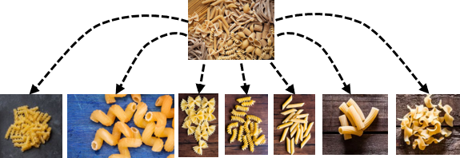
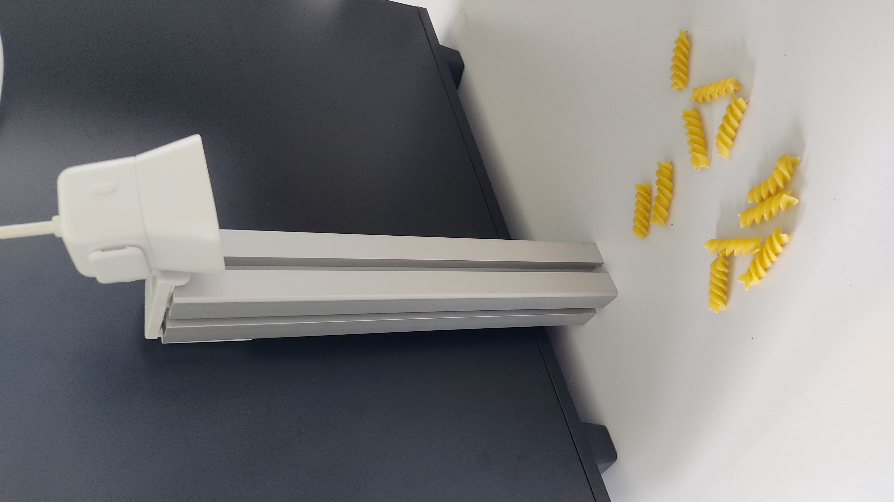
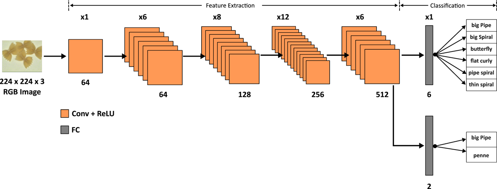
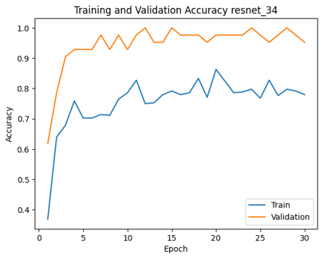
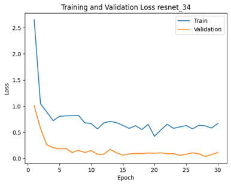

Pipeline walkthrough
End-to-end pipeline: data capture, transfer-learning training, and real-time inference.
AI-driven pasta-shape classifier for the food industry — quality control, sorting, packaging, and inventory management — running real-time on a live camera feed. Transfer learning compensates for a deliberately small hand-collected dataset (56 / 7 / 7 train / val / test).
End-to-end pipeline: data capture, transfer-learning training, and real-time inference.
Live camera feed classified frame-by-frame at inference time.




